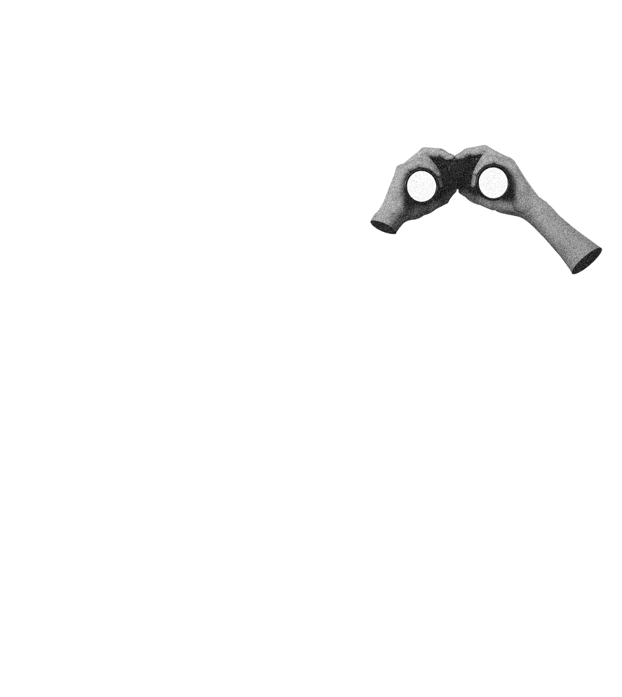
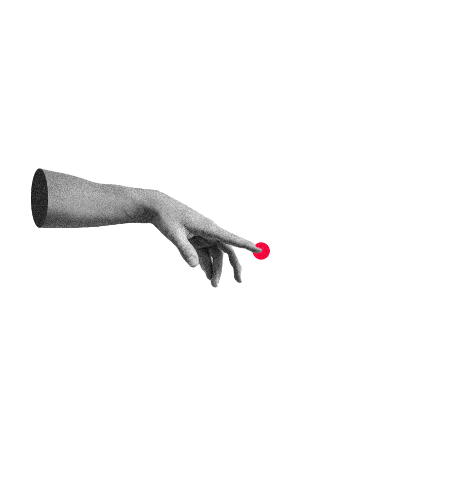
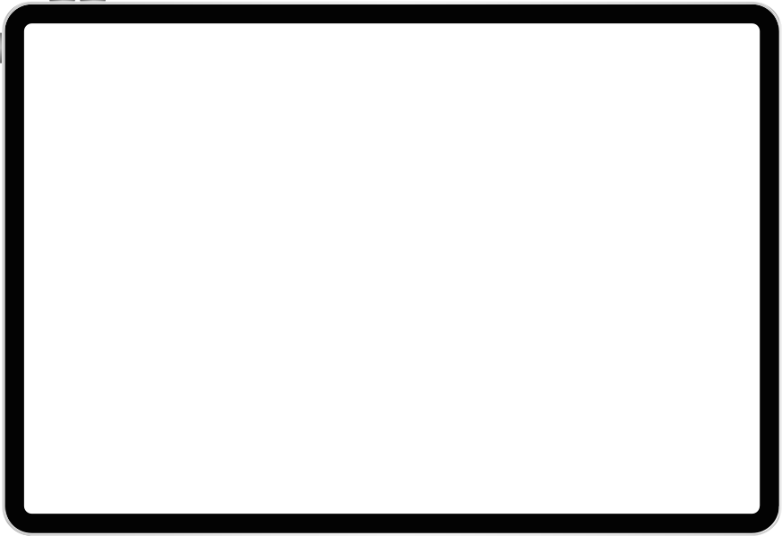

Combinando
estrategia funcionalidad estética usabilidad


Antes de crear, escucho. Cada proyecto comienza con preguntas que me permiten comprender a fondo el contexto, los usuarios y los objetivos del negocio. Diseñar con propósito significa alinear cada decisión visual y funcional con un impacto real.
Creo en el diseño como un proceso compartido. Trabajo en sintonía con clientes, usuarios y equipos para construir soluciones integradas que se sostienen en el tiempo. La co-creación no solo enriquece el resultado, también lo hace más relevante.
Menos, pero mejor. Busco que las interfaces sean claras, intuitivas y centradas en lo esencial. La simplicidad no es solo una cuestión estética, es una herramienta para mejorar la experiencia, reducir la fricción y comunicar con claridad.

Plataforma marketplace orientado a la compra y venta de productos nuevos y semi nuevos para bebés y niños
Plataforma de pre inscripción de asignaturas para estudiantes del Instituto Profesional Duoc UC
Sitio web vitrina y tienda online de proyectos editoriales directamente desde la Región de Aysén.
Plataforma de postulación en línea para Ingresos Complementarios de Admisión de la PUCV